Family is one of the most important parts of my life. I come from a family of six siblings, and I am the fifth child. Growing up in a big family has taught me many valuable lessons such as responsibility, patience, cooperation, and understanding. Being surrounded by my siblings has made my childhood memorable, as we shared many experiences, challenges, and happy moments together.
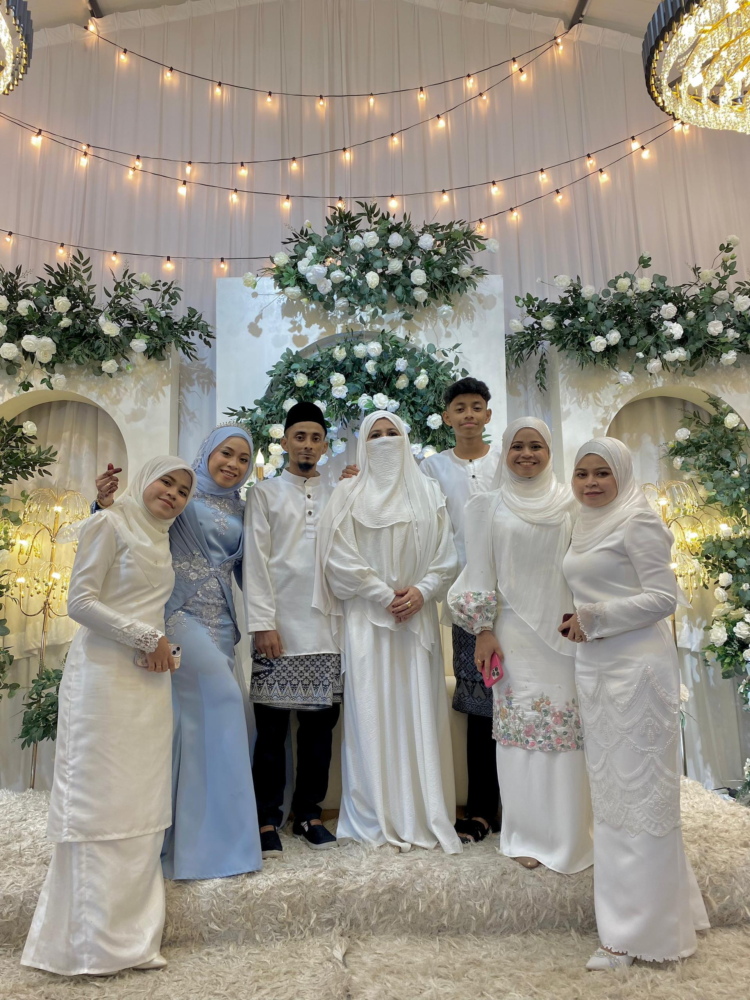
My family has always been my greatest source of support, encouragement, and motivation. They have stood by me during both good and difficult times, helping me overcome challenges and pursue my goals with confidence. Their love and belief in me inspire me to work hard in my studies and personal development. I am truly grateful for my family and the strong bond we share. Spending time together, celebrating special occasions, and supporting one another are moments that I deeply cherish. No matter where life takes me, my family will always remain an important part of my journey and the foundation of who I am today.
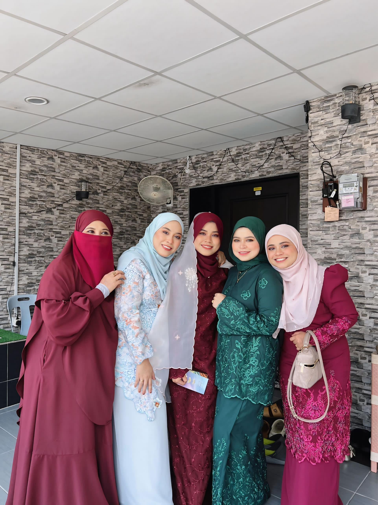
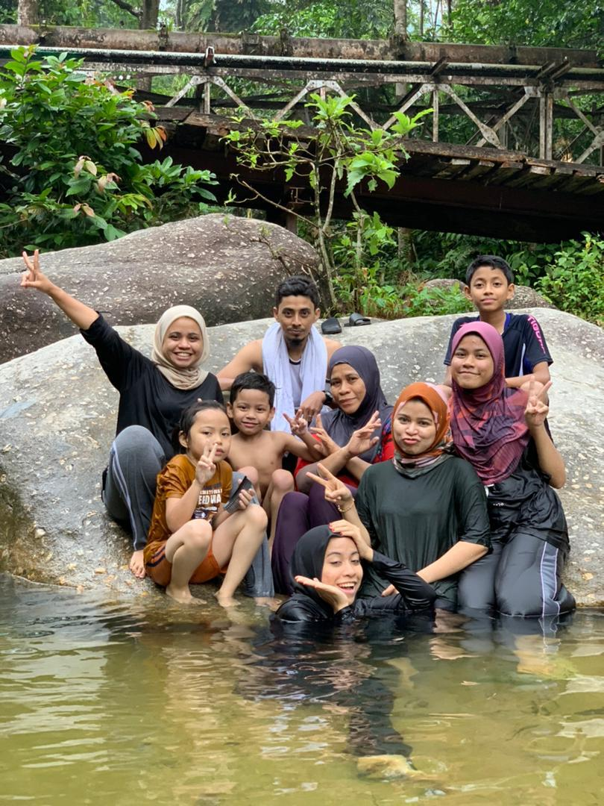
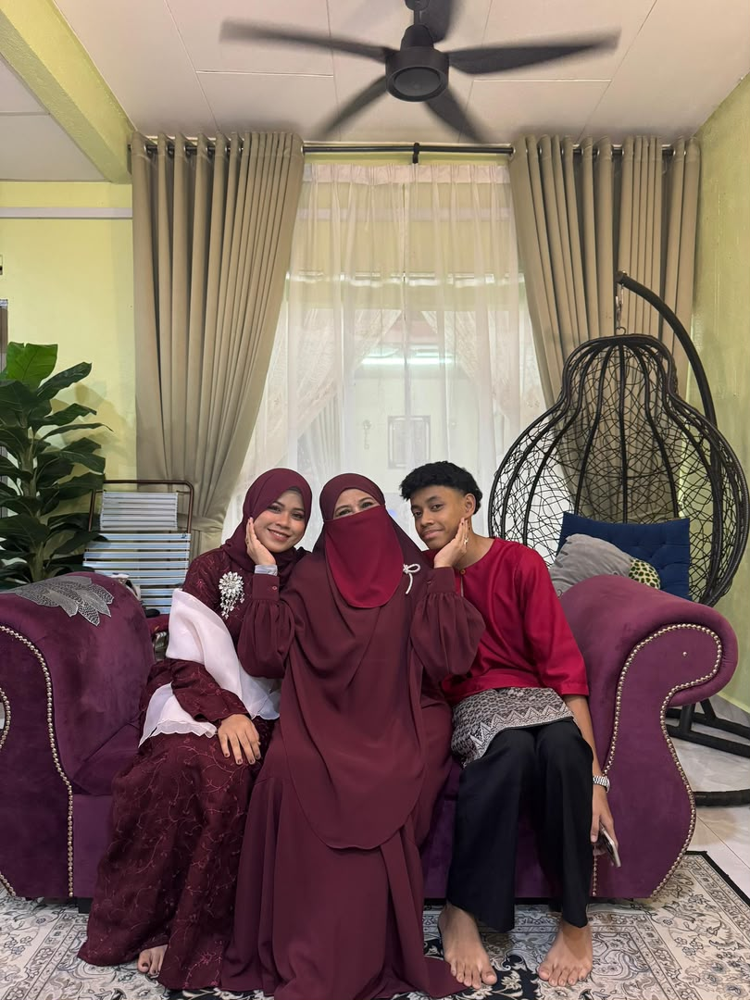
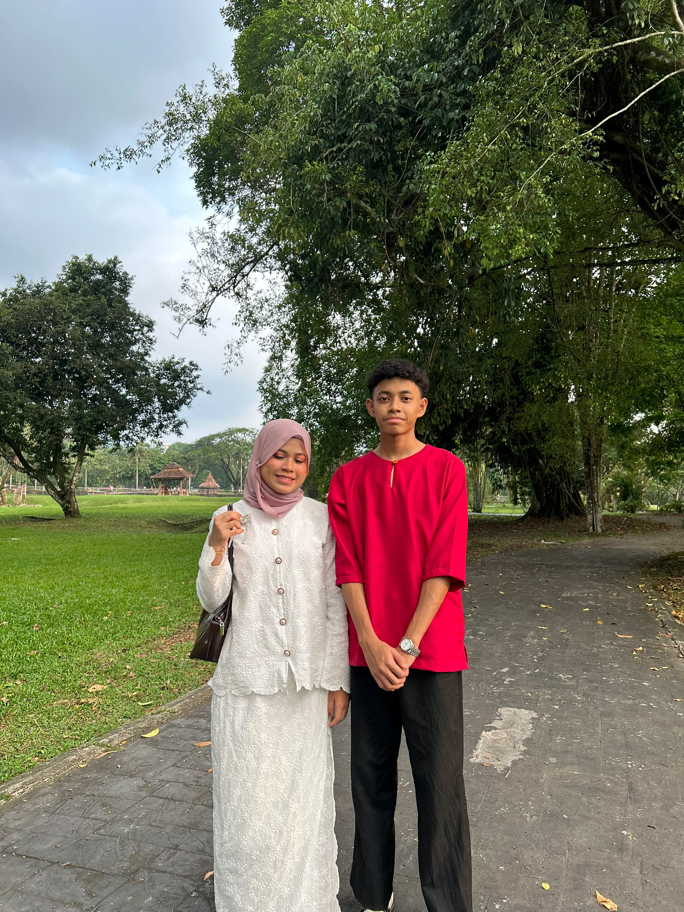
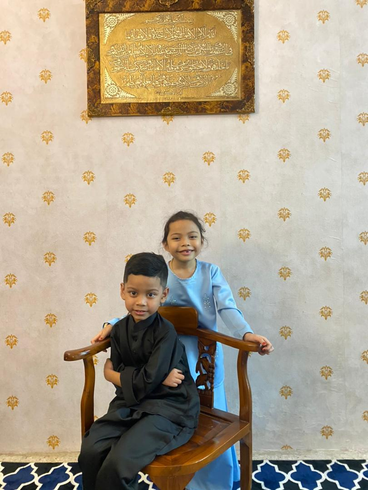
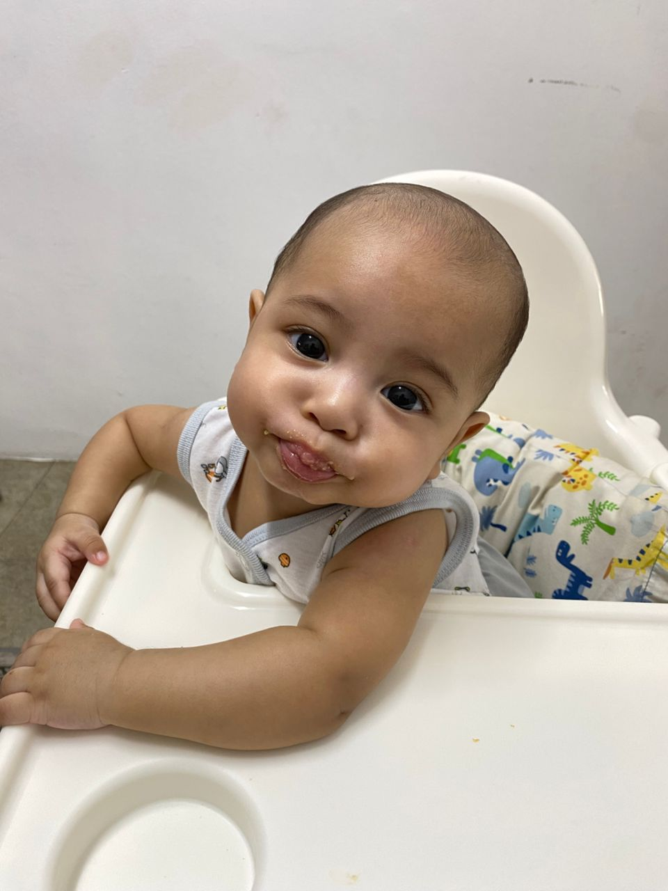
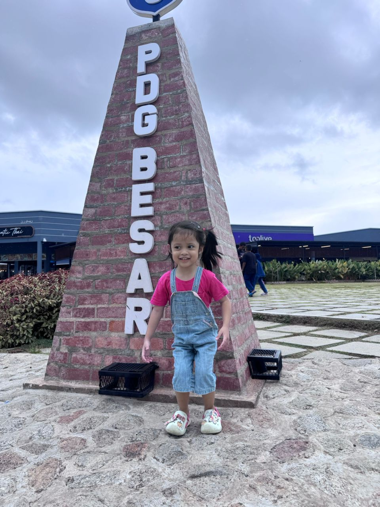
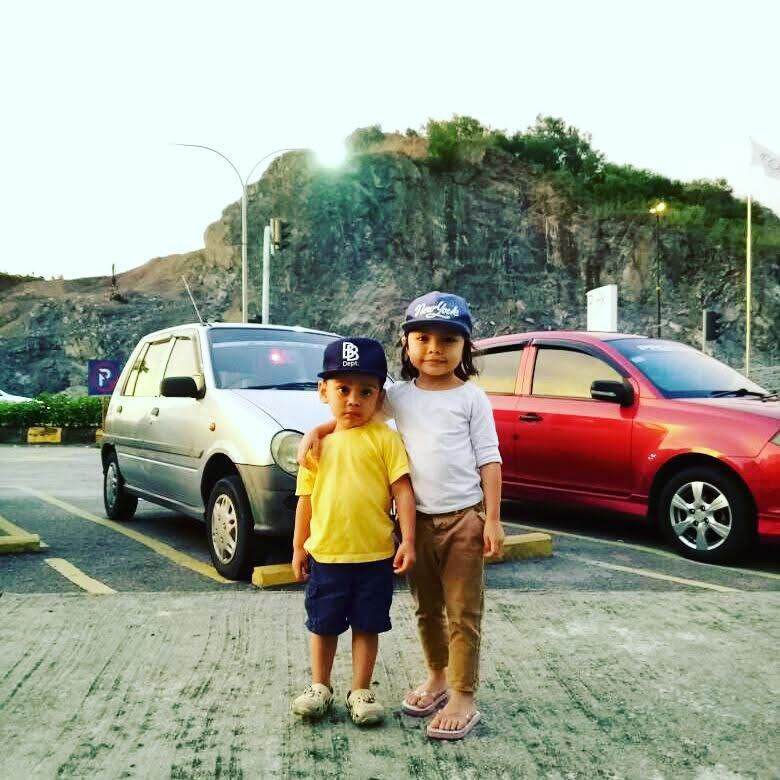
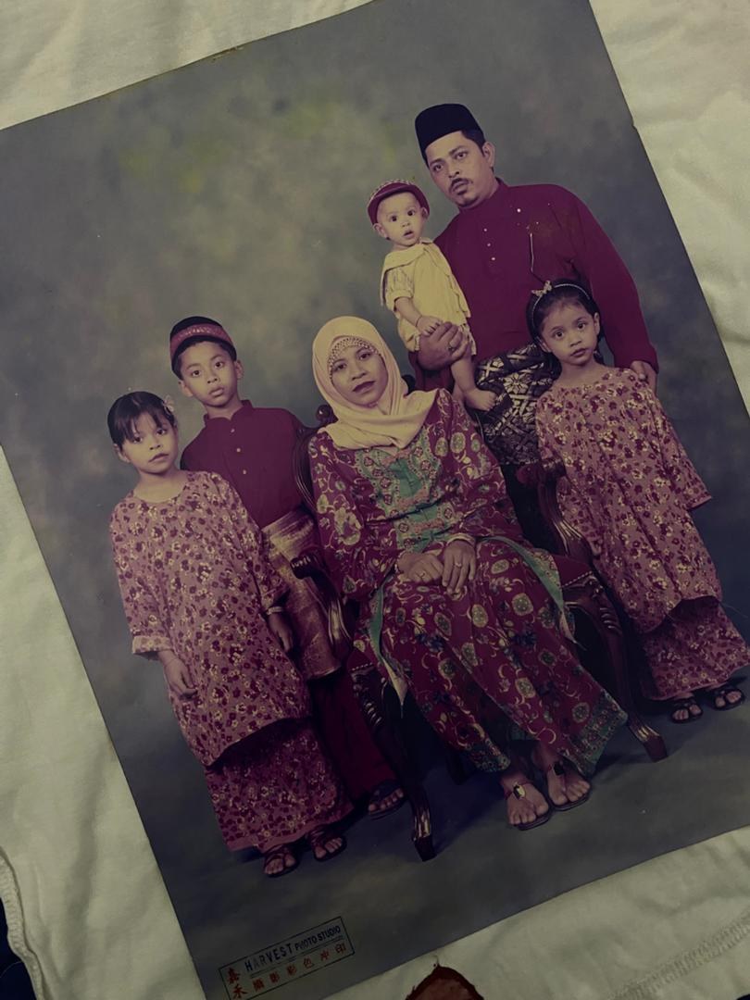
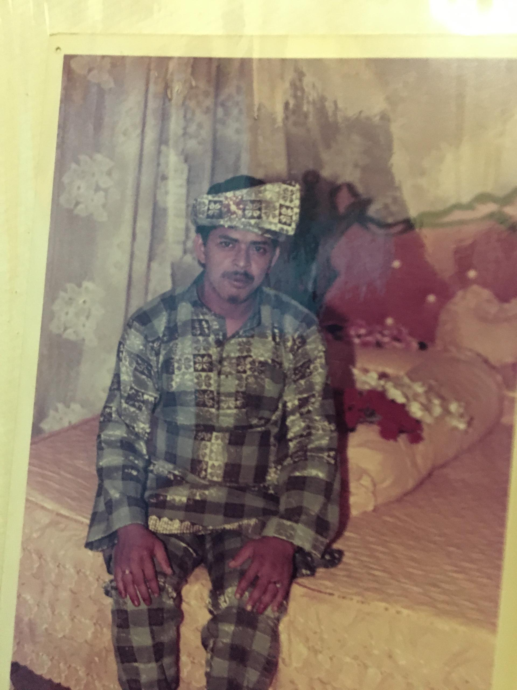
Although my abah is no longer with us, he will always hold a special place in my heart. I lost him when I was only four years old, so I do not have many memories of him. However, his absence has always been a part of my life and I often wonder what it would have been like to grow up with him by my side.
Even though I was too young to remember much, I have learned about his love, kindness, and dedication through the stories shared by my family. These stories have helped me feel connected to him and reminded me of the important values he left behind.
There are moments when I wish he could be here to witness the person I have become and the milestones I have achieved. I often wonder how proud he would be and what advice he would give me as I continue my journey through life.
His presence may no longer be with us but his memory lives on in our hearts. No matter how much time passes, he will always be remembered, loved, and deeply missed.
🕊️ We miss you, Abah. May Allah reunite us in Jannah. Amin.